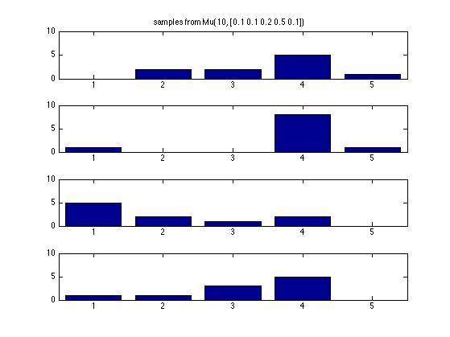

Plot samples drawn from a multinomial
% This file is from pmtk3.googlecode.com setSeed(1); nsamples = 4; model.N = 10; model.p = [0.1, 0.1, 0.2 0.5, 0.1]; X = multinomSample(model, nsamples); figure(); for i=1:nsamples subplot(nsamples, 1, i); bar(X(i, :)); set(gca, 'ylim', [0 10]); if i==1 title(sprintf('samples from Mu(%d, %s)', model.N, mat2str(model.p))); end end printPmtkFigure('multinomSamples');